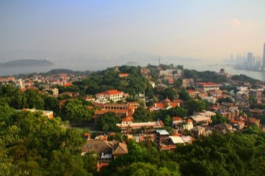
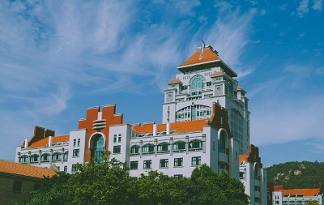
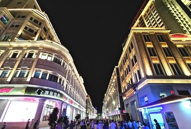
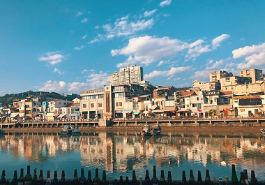
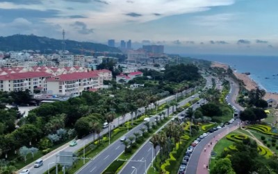

鼓浪屿，原名“圆沙洲”，别名“圆洲仔”，南宋时期命“五龙屿”，岛西南有一海蚀岩洞受浪潮冲击，声如擂鼓，自明朝雅化为今名称“鼓浪屿”，位于福建省厦门市思明区鼓浪屿街道，面积1.88平方公里，与厦门岛隔海相望，至高点为日光岩。 详情请见鼓浪屿官方介绍 或 厦门市鼓浪屿管委会官网。
南普陀风景游览区位于厦门老城区的东面，荟集了闽南源远流长的历史文化，天王殿、大雄宝殿、大悲殿、藏经阁、左右厢房、钟鼓楼等构成的建筑群。文物丰富多彩，建筑雄伟壮观，颇具佛教特色，反映了宗教、闽台、侨乡文化和近代史的人文景观非常丰富。 详情请见南普陀官方网站 或 南普陀介绍。
厦门大学由爱国华侨领袖陈嘉庚先生于1921年创办，是中国近代教育史上第一所华侨创办的大学，国内最早招收研究生的大学之一，是首个在海外建设独立校园的大学，早期建筑入选全国重点文物保护单位和“首批中国20世纪建筑遗产”名录，被誉为“南方之强““中国最美大学”。 详情请见厦门大学官网 或 厦门大学官方介绍。
中山路，位于福建省厦门市，是当地最老牌的商业街，人流旺，商品多，名气大，不论往昔还是如今，人们一提及厦门，就言必中山路，好似纽约的曼哈顿、东京的银座、香港的中环。到厦门，中山路是不能不去的，因为它代表了厦门的繁华，富有和时代韵律。到这里可享受丰富的物质世界，领略现代风采。 详情请见中山路官方介绍。
沙坡尾是厦门港的源起之地，从清代起就作为避风港。 沙坡尾是厦港街道辖7个社区之一，南侧毗邻南普陀寺和厦门大学， 其名来源是因为这里是一大段沙滩的最末端，且小有名气的沙坡尾避风坞位于该社区。早期的厦门港是一处弧形的海湾，这一带海湾呈月牙型，金色的沙滩连成一片，故有"玉沙坡"美称。详情请见沙坡尾官方介绍。
环岛路是环绕厦门市厦门岛的城市干道，全长43公里，现主要有两个路段，环岛东路-环岛南路。从厦门大学到前埔的一段海岸，长约9公里，被称为"黄金海岸线"，是大家最钟情的区域之一。环岛路也是厦门马拉松赛的主赛道，被国际誉为世界最美的马拉松赛道。路间的绿化镶嵌有《鼓浪屿之波》的乐谱，路旁有马拉松塑像，路旁红色道路的部分只限行人通行。详情请见环岛路官方介绍。
